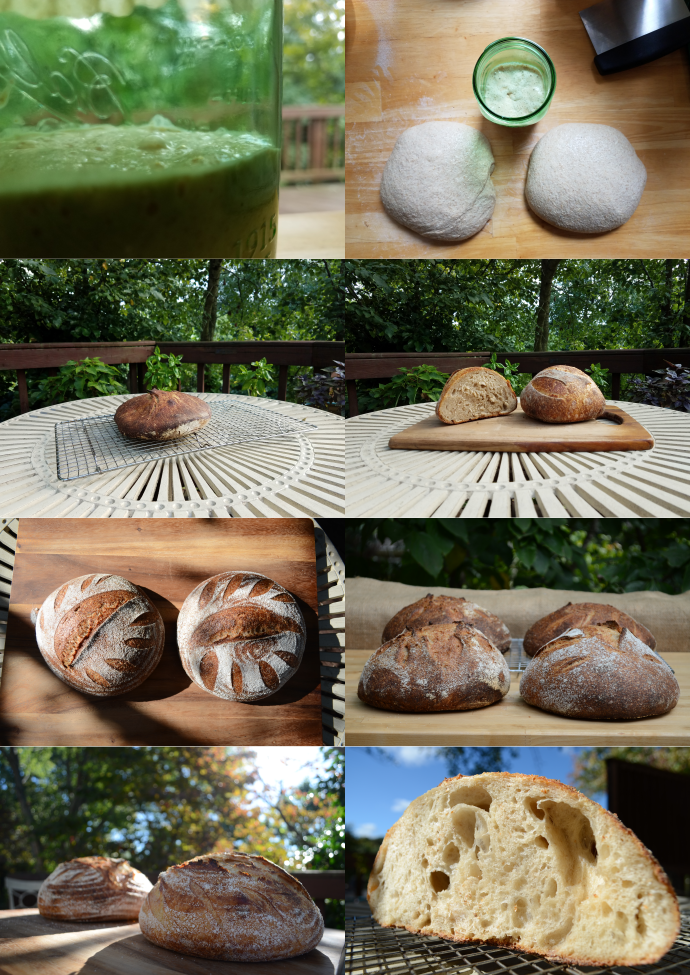

real bread

What exactly is sourdough?
Discovering a Bread That's Real
Late July of 2017, I began my journey to learn how to bake a simple bread. I desired to bake a bread that didn't need to be fortified, but rather a bread that was already strong, bold, delicious, and nutritious straight out of the oven. Long fermentation, I found, was the key to achieve this goal.
So I mixed some flour and water, waited a few days, added more flour and water, and slowly but surely I had created my first natural leaven, or as many like to call, sourdough starter. The desire to become a baker was born.
I've encountered many failed attempts and frustrated moments, but none of those have been able to discourage me from desiring to provide this humble bread to the people around me, especially those who have bad experiences with store-bought bread due to gluten intolerance. Thankfully, the fermentation process breaks down gluten and gets rid of the bran's phytic acid (and other science-y things I won't admit to fully understanding) which allows the wheat berry to become more easily digestible for non-celiac gluten intolerant people (and everyone else, too).
In this journey, I hope to be a part of changing the common perspective on bread that is widespread in today's society, namely the idea that bread isn't very good for you. Of course, if we're talking about the modern mass-produced version that's been stripped of its nutrients, then yes that bread is quite terrible for you. Bread itself, however, as it has been prepared historically, is actually able to sustain human life. I believe this is a big part of why Jesus said as he was tempted to turn stones into loaves, "Man shall not live by bread alone, but by every word that comes from the mouth of God." Indeed, he even called himself the Bread of Life, revealing to us a greater need—our need for spiritual life, not just physical sustenance which, again, was easily found in bread. This is a theological aside that I would love to get into in detail at another time. So how can this healthier bread become more widely available? I believe the answer is not found in mass bread producing companies, but rather in the resurgence of the local baker.
Health benefits aside, this bread is simply delicious. It doesn't have the "well, it's healthy so I guess I have to eat it" factor. It's just super tasty.


I'm still updating this page, but you can still let me know how I can best serve you by filling out this short form!